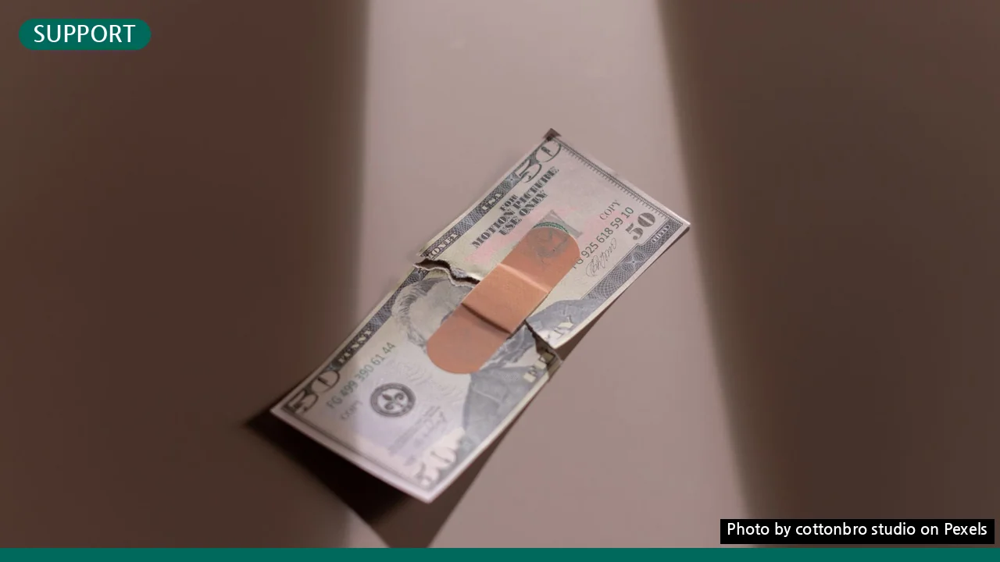

정책서민금융상품, 나도 받을 수 있을까? 초보자를 위한 핵심 조건과 절차
사진: cottonbro studio / Pexels (무료 이미지, 출처 표기)
정책서민금융상품, 왜 필요할까요?
금융기관에서 대출을 받기 어려운 분들을 위해 정부가 마련한 제도가 바로 정책서민금융상품입니다. 낮은 금리로 자금을 빌리거나, 생활비, 사업자금 등을 지원받아 경제적 어려움을 극복하고 자립할 수 있도록 돕는 것이 주목적입니다. 일반 은행 대출의 문턱이 높게 느껴지는 분들에게 실질적인 대안이 됩니다.
나에게 맞는 정책서민금융상품 찾기: 주요 상품 비교
대표적인 정책서민금융상품으로는 햇살론, 새희망홀씨, 미소금융 등이 있습니다. 각 상품마다 대상, 용도, 대출 한도 등이 다르므로 자신에게 맞는 상품을 선택하는 것이 중요합니다. 2026년 11월 기준으로 주요 상품을 비교하여 소개해 드립니다. 정확한 내용은 각 상품의 공식 홈페이지에서 확인해야 합니다.
이외에도 특정 대상을 위한 햇살론유스(청년), 햇살론17(고금리 대환) 등 다양한 상품이 있습니다. 각자의 상황에 따라 유리한 상품이 달라질 수 있으므로, 서민금융진흥원의 상담을 받아보는 것이 가장 좋습니다.
필수 확인! 정책서민금융상품 자격 조건
대부분의 정책서민금융상품은 '소득'과 '신용평점'을 주요 기준으로 삼습니다. 2026년 11월 현재 기준, 일반적인 자격 요건은 다음과 같습니다. 상품별로 차이가 있을 수 있습니다.
- 연소득 기준:
- 연소득 3,500만원 이하인 경우: 신용평점과 상관없이 신청 가능합니다.
- 연소득 3,500만원 초과 ~ 4,500만원 이하인 경우: 개인신용평점(NICE 또는 KCB)이 하위 20%에 해당하는 경우에만 신청할 수 있습니다. 예를 들어, NICE 신용평점은 749점 이하, KCB 신용평점은 700점 이하를 의미합니다.
- 재직 및 사업 기간: 근로자는 최소 3개월 이상 재직, 사업자는 최소 3개월 이상 사업 운영 이력이 필요합니다.
- 기타 요건: 일부 상품은 특정 자격(예: 기초생활수급자, 차상위계층)이나 교육 이수 등을 요구할 수 있습니다.
정확한 신용평점 기준과 소득 기준은 매년 변동될 수 있으므로, 신청 시점에 서민금융진흥원 또는 각 상품 취급 은행에 문의하여 최신 정보를 확인하는 것이 중요합니다.
복잡하지 않아요! 신청 절차와 준비 서류
정책서민금융상품 신청 절차는 크게 3단계로 나눌 수 있습니다. 미리 서류를 준비해두면 더욱 신속하게 진행할 수 있습니다.
- 상담 및 상품 선택:
- 서민금융진흥원 방문(전국 서민금융통합지원센터) 또는 서민금융콜센터(국번없이 1397)를 통해 상담을 받습니다. 온라인으로도 자가 진단 및 상담 예약이 가능합니다.
- 상담을 통해 자신의 소득, 신용 상황에 맞는 최적의 상품을 추천받고, 대출 한도 및 금리 등을 안내받습니다.
- 서류 준비 및 신청:
- 신분증: 주민등록증, 운전면허증 등
- 재직 및 소득 확인 서류: 재직증명서, 급여명세서, 소득금액증명원, 건강보험자격득실확인서 등
- 사업자 확인 서류: 사업자등록증, 사업소득 원천징수영수증, 부가가치세과세표준증명원 등 (사업자의 경우)
- 기타: 부동산 등기부등본, 전월세 계약서 등 (담보 대출이나 특정 상황에 필요)
- 준비된 서류를 가지고 상품 취급 은행(햇살론, 새희망홀씨 등)이나 서민금융진흥원(미소금융 등)에 방문하여 신청서를 작성합니다.
- 심사 및 대출 실행:
- 제출된 서류를 바탕으로 자격 심사가 진행됩니다. 심사에는 며칠에서 수 주까지 소요될 수 있습니다.
- 심사 결과 승인이 나면, 대출 약정을 체결하고 지정된 계좌로 대출금이 지급됩니다.
각 상품 및 취급 기관에 따라 필요 서류와 절차에 약간의 차이가 있을 수 있으니, 상담 시 정확한 안내를 받는 것이 중요합니다.
신청 전 반드시 알아야 할 주의사항
정책서민금융상품은 좋은 기회이지만, 몇 가지 주의사항을 인지하고 신청해야 불이익을 예방할 수 있습니다.
- 대출 상환 능력 고려: 아무리 금리가 낮더라도 본인의 상환 능력을 넘어서는 대출은 부담으로 돌아올 수 있습니다. 소득과 지출을 면밀히 검토하여 무리하지 않는 선에서 대출 계획을 세워야 합니다.
- 신용도 관리의 중요성: 대출을 받은 후 성실하게 상환하는 것은 신용도를 높이는 중요한 과정입니다. 연체 없이 꾸준히 갚아나가야 향후 더 좋은 금융 상품을 이용할 수 있습니다.
- 보이스피싱, 불법 사금융 주의: 정책서민금융상품을 사칭하여 수수료를 요구하거나 개인 정보를 탈취하려는 사례가 종종 발생합니다. 정책서민금융상품은 어떠한 경우에도 수수료를 요구하지 않습니다. 의심스러운 연락은 서민금융진흥원 콜센터(1397)로 문의하세요.
- 다중 채무 여부 확인: 이미 과도한 대출이 있는 경우, 추가 대출이 어려울 수 있으며 심사 과정에서 불리하게 작용할 수 있습니다. 현재 자신의 채무 상태를 정확히 파악해야 합니다.
정책서민금융상품은 경제적으로 어려운 상황에 처한 분들에게 다시 일어설 수 있는 든든한 버팀목이 되어줍니다. 복잡하게만 생각하지 마시고, 이 글에서 안내해 드린 정보를 바탕으로 적극적으로 알아보시길 권장합니다. 망설이지 말고 서민금융진흥원의 문을 두드려보세요. 2026년 11월 기준으로 작성된 이 정보는 참고용이며, 정확한 최신 정보는 반드시 공식 기관에서 다시 확인하시길 바랍니다.
🔗 이 글도 함께 보면 좋아요: 근로장려금, 나도 받을 수 있을까? 초보자를 위한 신청 조건과 절차 완벽 가이드
관련 추천 상품
서민대출, 정부지원대출, 햇살론 신청 관련 인기 상품 보러가기
이 포스팅은 쿠팡 파트너스 활동의 일환으로, 이에 따른 일정액의 수수료를 제공받습니다.